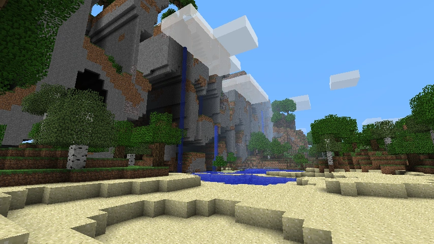
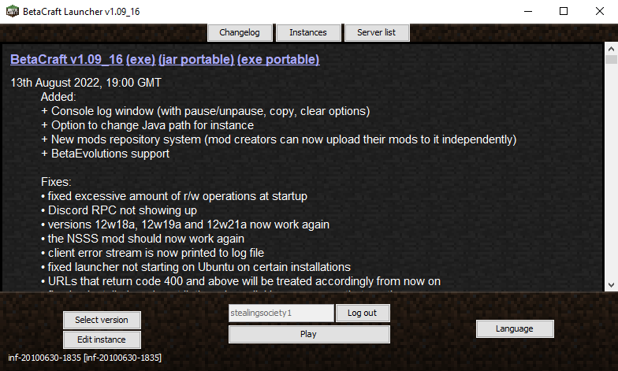

Introduction
The “Recollection” Project started as the idea of porting a Minecraft world from the latest version of Infdev to 1.19.2 – an interesting experiment, as the methods for world generation changed throughout the years.
As of February 1st, 2023, we decided that we would rather turn this quick experiment into a full playthrough, as to appreciate all of the features we got throughout the years, give our insight on design changes and see how a player would adapt to the evolution of Minecraft.
This project will walk us through every step and measure that we take to make sure that the world stands the test of time. We will be using map editors and other external tools to make sure that core parts of the world stay intact as new terrain generation overwrites the old.
We will be making use of the BetaCraft Launcher (v 1.09_16 as of February 1st, 2023), specifiying the game version we are playing on at the given moment. We’ll be providing downloads for every version of the map at the end of every post, so that you can play along at home!
We hope you’ll be looking forward to seeing how our project evolves!